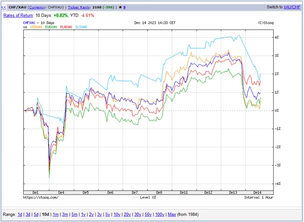
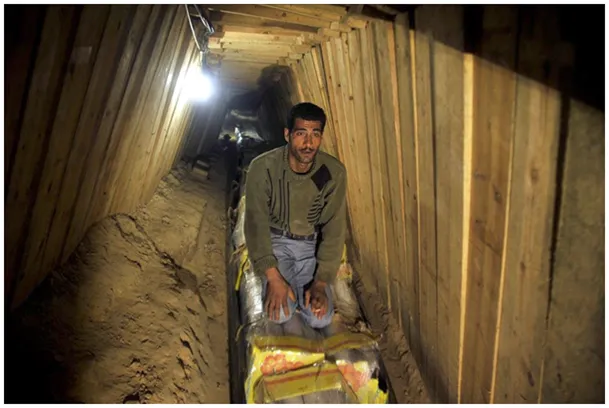

Ogon merda tak mocno, że może zabić żywiciela.
Grudzień nie pozwala się nam nudzić, izraelska szekla a potem dolar ponad 2 % w dół, waluty w stosunku do złota. To jest dużo w ciągu kilku godzin.
Kurs dolara jest pochodną zapowiedzi obniżania stóp procentowych w USA, czyli też spadkiem odsetek z lokat. Szekla to już nerwowość rynków o bezpieczeństwo na Bliskim Wschodzie przy chwiejnych deklaracjach USA w sprawie Gazy.
Biden stoi w rozkroku przed wyborami, a ogon merda tak mocno, że może zabić żywiciela. Amerykańska lewica jest podzielna i wielu ekspertów publicznie mówi o kłopotach na Ukrainie i w Gazie. Na obu frontach sprawy nie idą dobrze, najkrócej mówiąc w obu przypadkach nie doceniono przeciwnika. Palestyńskie partyzantki mają mnóstwo sprzętu i nowoczesnej broni.
W Europie panika, bo Rosja oświadczyła, że kraje z których będą startować F16 na misje bojowe przeciw Rosji automatycznie stają się stroną konfliktu. Finowie łagodzą stosunki z Moskwą otwierając przejścia graniczne, tym samym napięcie ze Skandynawii przenosi się na południe. Tymczasem izraelski minister bezpieczeństwa narodowego Izraela udostępnił wideo przedstawiające żołnierzy wykonujących żydowskie rytuały w meczecie w mieście Jenin na Zachodnim Brzegu. To doskonały przepis na radykalne działania przeciw "niewiernym", czyli światu zachodniemu, z którym w islamie utożsamiany jest Izrael.
Konieczna tu jest uwaga, że wierzący, tradycyjni Żydzi są w Izraelu prześladowaną mniejszością. Współczesne ruchy syjonistyczne najczęściej swą duchowość osadzają na kabale, czyli systemie filozoficznym skrajnie odległym wierze Mojżeszowej.

Żyjemy w czasie, gdy przewaga ekonomiczna i polityczna przesuwa się do Azji, kilka miliardów ludzi od miesiąca dostaje obraz z Gazy bardzo podobny do Powstania Warszawskiego w 1944 i późniejszej likwidacji całego miasta. Chiny od kilku lat nazywają politykę Izraela w Palestynie zbrodniczą i nieludzką, co pozwoliło im zjednoczyć w bloku Azjatyckim skłócone wcześniej państwa arabskie. Wygląda na to, że Wuj Sam już nie rozdaje mocnych kart z wyjątkiem amunicji, np. takiej do oczyszczania z ludzi kanałów.
Paweł Klimczewski